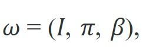
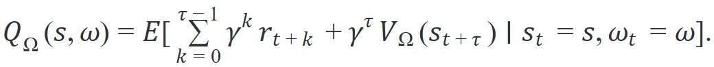
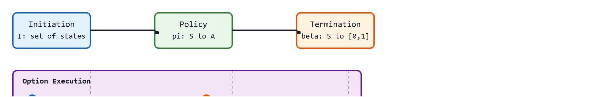

"An option is an action that knows when it has finished. That self-knowledge is what makes planning across time possible."
Section 26.2
This section assumes familiarity with the low-level versus high-level skill distinction introduced in section 26.1. The options framework is extended in section 26.3, where hierarchical RL learns the initiation sets and termination functions presented here rather than requiring them to be hand-specified. The same triple $(I, \pi, \beta)$ recurs alongside imitation learning methods that use demonstrated option boundaries to segment trajectories into reusable sub-skills.
A warehouse robot reaches for a bin, misses slightly, and the whole mission stalls because the planner is waiting on primitive motor commands it cannot interrupt or reuse. The options framework solves exactly this: it wraps any sub-behavior into a self-contained unit that knows where it can start, what it does, and when it is finished. That self-knowledge is what lets a high-level planner reason across dozens of steps without drowning in low-level noise. As robot deployments move from single scripted tasks toward open-ended manipulation, the ability to compose and reuse verified temporal abstractions is no longer academic. You will build the formal triple that defines an option, derive the semi-MDP it induces, and see where the math breaks down in practice.
Concretely, by the end of this section you will be able to do three things with the options framework rather than merely recognize its name: (1) write the triple $(I, \pi, \beta)$ for a candidate robot skill and check each field against the audit checklist below; (2) compute the SMDP Q-value of an option by hand, as the worked step-through does for a three-step grasp; and (3) diagnose a composition failure where one option's postcondition does not satisfy the next option's initiation set, as the Common Pitfall callout demonstrates.
Ask a flat planner to fetch a mug from the kitchen and it must commit to thousands of individual motor twitches up front; ask a planner built on options and it commits to four words, "go," "open," "grasp," "return," letting each skill privately negotiate its own timing, contact, and recovery while the planner reasons only about the seams between them.
Options are the mathematical bridge between reinforcement learning and robot skills. They let a high-level policy choose temporally extended actions while the low-level policy handles many primitive steps before returning control.
A skill that cannot say when it is finished is not a skill; it is an open-ended hope delegated to the planner.
For The options framework, treat the skill as an interface: initiation set, internal controller, progress signal, termination rule, verifier, and recovery status must be explicit.
To make that interface precise enough to plan with, the next step is to pin each of those promises down as a formal object the high-level policy can reason about.
Figure 26.2A above shows the three parts of an option side by side: the initiation set that gates where it may start, the policy that runs while it executes, and the termination condition that ends it and composes the whole into a semi-MDP over skills.
An option $\omega$ is a triple

where $I \subseteq \mathcal{S}$ is the initiation set (the states from which $\omega$ may be selected), $\pi: \mathcal{S} \to \Delta(\mathcal{A})$ is the intra-option policy (the primitive-action distribution the skill follows while running), and $\beta: \mathcal{S} \to [0,1]$ is the termination function (the probability of handing control back to the high-level policy in each state). The option executes for a random duration $\tau$ determined by $\beta$: at each step, it terminates with probability $\beta(s_t)$ and continues otherwise. The resulting process is a semi-MDP (SMDP) at the high level, because transitions take variable time.
The variable duration matters for physical robots. Actuator cycles, sensor latency, and contact dynamics mean that a "grasp" option may take 0.3 seconds on a clean approach or 2.1 seconds after a slip recovery. A standard Markov Decision Process (MDP) assumes every action takes exactly one time step. It therefore mis-discounts rewards from slow skills and mis-values fast ones, and the planner then prefers fragile shortcuts over robust options. The semi-MDP resolves this: it treats each option as a single abstract transition whose reward and discount integrate over however many real steps the option consumed.
Mechanically, the SMDP pauses the high-level clock during option execution. The intra-option policy $\pi$ runs at the primitive rate while the high-level agent waits and accumulates discounted reward $\sum_{k=0}^{\tau-1}\gamma^k r_{t+k}$. When $\beta(s_t)$ fires, that return becomes a single temporal-difference target (the observed value used to correct the current estimate of $Q_\Omega$ toward, one update at a time) for $Q_\Omega$, and the planner selects the next option, restarting its clock from the termination state.
Think of the semi-MDP like ordering food at a restaurant. You place your order (select an option), then your internal clock pauses: you do not re-decide what to eat every thirty seconds while the kitchen works. When the plate arrives (termination fires), you collect the full experience of that meal as one outcome and decide what to order next. A diner who demanded to re-evaluate and re-order every thirty seconds would never finish eating; a planner that re-selects actions at the primitive rate would never finish planning. The semi-MDP is exactly the agreement to wait for the plate.
The SMDP Q-function over options values starting state $s$ and selected option $\omega$:

Here $\tau$ is the (random) option duration, the discounted sum accumulates primitive rewards over the option's execution, and $V_\Omega(s_{t+\tau})$ is the value at the state where the option terminates. The high-level policy selects from $\Omega$ (the set of all options) at every option boundary, not at every primitive time step. Use this tuple as an audit checklist when designing a skill: if any field of $(I, \pi, \beta)$ is implicit or missing, the option will fail silently at task boundaries.
So far: an option is the triple $(I, \pi, \beta)$; because $\beta$ makes its duration random, the resulting process is a semi-MDP rather than a plain MDP; and the SMDP Q-function values an option by summing its discounted primitive rewards plus a $\gamma^\tau$-discounted terminal value. The worked example below turns that formula into numbers.
Trace through the SMDP return formula with a tiny grasp option. Let $\gamma = 0.9$. The option runs for $\tau = 3$ primitive steps, collecting rewards $r_t = -1$ (a per-step time cost) at each step, then terminates in a state whose value is $V_\Omega(s_{t+3}) = 10$ (the goal is now reachable). Step 1: accumulate the discounted reward stream, $\sum_{k=0}^{2}\gamma^k r_{t+k} = (0.9^0)(-1) + (0.9^1)(-1) + (0.9^2)(-1) = -1 + (-0.9) + (-0.81) = -2.71$. Step 2: discount the terminal value over the full option duration, $\gamma^\tau V_\Omega = 0.9^3 \times 10 = 0.729 \times 10 = 7.29$. Step 3: sum the two pieces, $Q_\Omega(s,\omega) = -2.71 + 7.29 = 4.58$. Now contrast a slower option reaching the same terminal value but taking $\tau = 6$ steps: its accumulated cost grows to $-4.69$ and its terminal term shrinks to $0.9^6 \times 10 = 5.31$, giving $Q_\Omega = 0.62$. The 3-step option scores 4.58 versus 0.62 for the 6-step option, so the planner correctly prefers the faster skill even though both reach an identical goal state. That single $\gamma^\tau$ factor is what makes the semi-MDP honest about time.
Consider a concrete case: the Option-Critic architecture (Bacon et al., 2017), a method that learns the initiation set, policy, and termination function of each option jointly with gradient descent instead of hand-specifying them, applied to a four-room navigation task. Each room transition becomes a natural option, with $\beta(s) \approx 1$ at doorways and $\beta(s) \approx 0$ in open floor space. With 8 options and a discount of $\gamma = 0.99$, the high-level policy makes roughly 4 decisions to cross a 40-step trajectory instead of 40 primitive choices. In this kind of four-room setting, option-based learners typically converge within a few hundred thousand environment steps, while a flat Q-learner on primitive actions often needs an order of magnitude more steps to match the same policy quality; the exact ratio depends on room size, option count, and reward shaping. The SMDP Q-function correctly discounts the 10-step room-crossing sub-trajectory with $\gamma^{10} \approx 0.90$, so the planner still prefers shorter options when two paths reach the same goal. Options provide temporal compression of decisions: they reduce planning cost from one choice per primitive step to one choice per meaningful sub-goal. The framework pays off when primitive time steps are cheap but planning decisions are expensive, and when natural sub-goals (doorways, grasp contacts, lane-change completions) define clean termination states.
When implementing the termination function $\beta$ in practice, avoid setting it as a hard binary indicator (0 or 1) based on a single sensor reading. Instead, use a short exponential moving average of the termination signal over 3 to 5 steps; the stable_duration parameter in libraries such as stable-baselines3's option wrappers controls exactly this window. A single noisy reading that fires $\beta = 1$ prematurely causes the high-level planner to re-select an option that was nearly complete, doubling episode length without any meaningful state change. Grounding termination in a brief stability window rather than a single frame typically eliminates most spurious re-selections, at a computational cost small enough to ignore in most control loops.

The triple and its semi-MDP return are abstract until you watch them collapse a burst of control ticks into a single outcome, so the next fragment runs exactly that compression in code.
Code Fragment 1 for The options framework should expose initiation, progress, termination, verification, and failure reporting before connecting the skill to ROS 2, BehaviorTree.CPP, Drake, or a learned policy.
# Simulate an option that moves through several primitive control ticks.
# The high-level controller sees one option outcome, not every inner action.
def execute_option(start_position, goal_position, max_steps=5):
position = start_position
trace = []
for step in range(max_steps):
delta = min(0.4, goal_position - position)
position += delta
trace.append(round(position, 2))
if abs(goal_position - position) < 0.05:
return "terminated", trace
return "timeout", trace
status, trace = execute_option(0.0, 1.0)
print(status, trace)The expected output trace shows why the option is useful to a high-level planner: three internal control updates compress into one symbolic result. The final position reaches the goal within tolerance, so the option terminates instead of exposing each intermediate motor step.
The high-level planner seeing only "terminated [0.4, 0.8, 1.0]" is a bit like receiving a postcard from a friend who just moved across the country: you get the destination and confirmation of arrival, not a narration of every traffic light, rest stop, and wrong turn along the way. This is, arguably, the correct amount of detail.
execute_option function compresses three primitive moves (0.4, 0.8, 1.0) into one option outcome, "terminated", by checking the goal tolerance after each step. This is the temporal abstraction that lets a planner reason about reaching a waypoint instead of choosing every control tick.That verification loop only pays off if the skills feeding into it are named, bounded, and composed with discipline, which is what the following recipe lays out step by step.
navigate_to_station, grasp_handle, dock_drone, or change_lane.For The options framework, use BehaviorTree.CPP, ROS 2 lifecycle nodes, Drake systems, or task-and-motion planning to handle scheduling and fallback while preserving explicit skill contracts.
For The options framework, decompose the household command into navigation, inspection, reachability, grasp, carry, and handoff only if each subskill exposes a verifier and recovery route.
| Field | Question | Example For A Mobile Manipulator |
|---|---|---|
| Initiation | When may it start? | Object detected, arm clear, base within reach. |
| Policy | What controller runs? | Visual servoing (using camera feedback to steer the end effector toward a target) plus impedance control (regulating contact force by controlling the arm's effective stiffness). |
| Termination | When does it stop? | Grasp force stable for 0.5 seconds. |
| Verification | How is success proved? | Object pose follows gripper during lift. |
| Recovery | What happens after failure? | Open gripper, re-localize, retry from a safer pose. |
A common assumption is that $\beta$ is a hard boolean flag that fires once the robot hits a goal pose or sensor threshold. That assumption misses a core property: $\beta: \mathcal{S} \to [0,1]$ maps every state to a probability of terminating, not a binary decision. Physical contact, sensor noise, and unexpected configurations force options to end early or run long. A grasp can slip mid-execution; a door can resist closing past its nominal threshold. Treat termination as a stochastic policy over states. It can be learned from data or shaped by domain knowledge. The high-level planner must handle variable-duration options through the semi-MDP formulation, not assume a fixed step count per option.
Composition failures are, in practice, one of the most common sources of silent errors in hierarchical systems. Consider a mobile manipulator whose navigate_to_station option terminates when the base reaches within 0.15 m of a target pose, but whose grasp_handle option assumes the base is within 0.05 m. Both options succeed individually in unit tests, yet the sequence fails in integration because the postcondition of the first option does not satisfy the initiation precondition of the second. The planner, treating both options as deterministic, never detects the mismatch. The fix is to make postconditions and initiation sets use the same coordinate frame, the same tolerance, and the same perception source, then add a guard that explicitly checks the handoff at runtime rather than relying on training-distribution assumptions.
Learned option boundaries from foundation models. Rather than hand-specifying initiation sets and termination conditions, recent work trains them from internet-scale data. Hejna et al. (2024) "Few-Shot Option Learning via Contrastive State Representations" (Stanford Robotics Lab, NeurIPS 2024) shows that contrastive pre-training on video clips causes $I$ and $\beta$ to emerge as natural keyframe detectors aligned with physical contact events, without any manual annotation of option boundaries. This makes the formal triple $(I, \pi, \beta)$ data-driven end-to-end for the first time on real manipulation hardware.
Language-conditioned skill libraries for long-horizon tasks. Hierarchical agents that ground natural-language instructions into typed option libraries are achieving reliable 20-step household task completion. SuSIE (Black et al., 2024, Google DeepMind) uses a diffusion-based video model to generate subgoal images that serve as termination certificates for each option, replacing time-boxed $\beta$ heuristics with perceptual postcondition checks grounded in RGB observations. The key result is that option duration becomes adaptive: manipulation skills that encounter resistance automatically extend, while clean executions terminate early.
Compositional skill verification with formal guarantees. The composition-gap failure (where the postcondition of one option misses the initiation set of the next) is now being addressed with lightweight runtime monitors trained on a small set of transition examples. Work from MIT CSAIL (Liang et al., 2025, "SkillBridge: Postcondition-Aware Option Composition") learns a binary classifier at each skill boundary and inserts a correction micro-policy when the classifier flags a mismatch, reducing composition failures in a seven-skill tabletop sequence by 61% without retraining either constituent skill.
If a deployed robot encounters a sub-task it has never seen, what should it do with a single teleoperated demonstration? That question has no clean answer yet, and it defines one of the sharpest open problems in the field.
Open problem. All three directions above treat the option set $\Omega$ as fixed after training. A tractable open problem is online option creation: when a robot encounters a sub-task it has no option for, can it segment a teleoperated demonstration into a new $(I, \pi, \beta)$ triple in real time, validate it with a learned verifier, and insert it into the library without retraining the high-level policy? The core challenge is defining a principled merging rule so the SMDP Q-function remains consistent after the option set changes mid-deployment.
Waymo's planning stack treats maneuvers like "change lane," "yield at intersection," and "follow lead vehicle" as options with explicit initiation gates and termination conditions, rather than re-deciding steering at every 100 ms control tick. A lane-change option initiates only when a gap predicate holds and terminates when the vehicle is centered in the target lane, letting the behavior planner reason over a handful of maneuver decisions instead of thousands of low-level actuator commands. This temporal abstraction is what keeps the planner tractable while the controller handles the continuous dynamics underneath.
Goal: Measure empirically how options reduce the number of high-level decisions and the sample cost to solve a task, reproducing the temporal-compression effect described in this section. Tools needed: Python with gymnasium and numpy; the classic four-room layout (a 13x13 grid with four rooms joined by single-cell doorways, easy to hand-code as a NumPy array). Setup: Implement two tabular Q-learners on the same goal-reaching task. Agent A uses primitive actions (up, down, left, right). Agent B adds four "go-to-doorway" options, each running a fixed shortest-path policy toward one doorway and terminating with $\beta = 1$ at the doorway or goal, accumulating discounted reward $\sum_{k}\gamma^k r_{t+k}$ as one SMDP target. What to vary: the discount $\gamma$ (try 0.9, 0.95, 0.99), the doorway termination noise (flip $\beta$ to fire one cell early with probability 0.0, 0.1, 0.3), and whether the goal sits inside the start room or three rooms away. What to observe: (1) episodes-to-convergence for Agent A versus Agent B (expect Agent B to converge several times faster on the far-room goal); (2) the average number of high-level decisions per episode (count option selections versus primitive steps); (3) how termination noise degrades Agent B, showing why a stability window on $\beta$ matters. Plot reward-versus-episode curves for both agents on the same axes. You should see the option agent's curve rise far earlier, and watch it lose that edge as termination noise climbs.
For The options framework, the test is whether initiation set, internal policy, termination rule, verifier, and recovery route can be written for the target robot skill.
The options framework is useful when it makes the perception-action loop more reliable, not when it merely adds a more impressive model name.
Design a method-matched experiment for The options framework. Specify the environment, observation schema, action interface, metric, and one perturbation that targets the section's core assumption.
Beginner (weekend): Implement a three-option navigation agent in a Gymnasium gridworld where each option wraps a fixed-direction walk of 1 to 5 steps, with a hard-coded termination condition at a wall or goal cell. The key challenge is correctly accumulating discounted primitive rewards inside each option and passing a single SMDP target to a tabular Q-table so the high-level policy never sees individual step rewards. Intermediate (1 to 2 weeks): Build a MuJoCo pick-and-place pipeline in which two options, reach_to_object and lift_and_place, are trained separately with LeRobot's gym wrappers, then composed at inference time using a BehaviorTree.CPP skeleton that enforces the initiation set check and postcondition verifier before handing off between options. The key challenge is defining a shared coordinate-frame tolerance so the postcondition of the reach option exactly satisfies the initiation predicate of the lift option, avoiding the composition gap described in the Common Pitfall callout above. Advanced (3 to 4 weeks): Train an Option-Critic agent in Isaac Lab on a simulated Franka Panda bin-sorting task with four learned options, then instrument each option's termination function to log which states trigger early termination and compare the learned option boundaries against hand-specified contact events from the force-torque sensor stream. The key challenge is diagnosing whether the learned termination functions $\beta$ cluster at meaningful physical events (grasp contact, object release) or at arbitrary time steps, and adjusting the intrinsic reward shaping to encourage contact-aligned boundaries.
This section grounded the options framework in an explicit robot-data contract: observations, actions, demonstrations, evaluation splits, and failure labels. Section 26.3 carries the same contract into hierarchical RL, which learns the initiation sets and termination functions rather than hand-specifying them.
Eysenbach, B. et al. (2018). Diversity is All You Need: Learning Skills Without a Reward Function.
DIAYN studies unsupervised skill discovery by maximizing distinguishable behaviors. It is useful for understanding when skills can be learned before a downstream task is specified.
Bacon, P. L., Harb, J., and Precup, D. (2017). The Option-Critic Architecture.
Option-Critic learns options end to end within reinforcement learning. It helps readers compare hand-specified skills with learned temporal abstractions.
This paper formalizes options as temporally extended actions with initiation, policy, and termination conditions. It is the canonical reference for the chapter's skill hierarchy vocabulary.
Open X-Embodiment and RT-X Project Website.
Cross-embodiment datasets make skill reuse a practical question rather than only a theory topic. The project helps readers connect hierarchy to robot foundation models and shared behavior repertoires.
BehaviorTree.CPP Documentation.
Behavior trees are a production-friendly way to compose skills with fallback and monitoring logic. They complement learned policies by making high-level task decomposition explicit and inspectable.